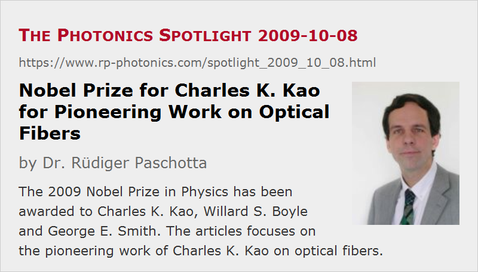

Nobel Prize for Charles K. Kao for Pioneering Work on Optical Fibers
Posted on 2009-10-08 as a part of the Photonics Spotlight (available as e-mail newsletter!)
Permanent link: https://www.rp-photonics.com/spotlight_2009_10_08.html
Author: Dr. Rüdiger Paschotta, RP Photonics Consulting GmbH
Abstract: The 2009 Nobel Prize in Physics has been awarded to Charles K. Kao, Willard S. Boyle and George E. Smith. The articles focuses on the pioneering work of Charles K. Kao on optical fibers.

Ref.: announcement of the 2009 Nobel Prize in physics; K. C. Kao and G. A. Hockham, “Dielectric-fiber surface waveguides for optical frequencies”, Proc. Inst. Elect. Eng. 113, 1151 (1966); K. C. Kao and T. W. Davies, “Spectrophotometric studies of ultra low loss optical glasses – I: Single beam method”, J. Phys. E 2 (1), 1063 (1968); W. A. Gambling, “The rise and rise of optical fibers”, IEEE J. Sel. Top. Quantum Electron. 6 (6), 1084 (2000); encyclopedia articles on fibers, silica fibers and optical fiber communications
Recently, the 2009 Nobel Prize in Physics has been awarded to Charles K. Kao, Willard S. Boyle and George E. Smith. In this article, I focus on the pioneering work of Charles K. Kao on low-loss optical fibers.
In the 1960s, there were already glass fibers which could be used for transmitting light. However, these fibers exhibited enormous propagation losses, so that the transmission distance was limited severely. Therefore, it appeared to most people that long-distance optical data transmission with fibers, now called optical fiber communications, would be clearly not feasible. After any appreciable distance, the optical power would be attenuated to levels which are too low to detect. It was well known, of course, that progress on detection techniques would not remedy this situation, since there are rather fundamental limits such as shot noise.
Despite these discouraging circumstances, Kao had a closer look at the prospects for reducing propagation losses of fibers. He realized that the losses of existing fibers were orders of magnitude above the fundamental limit, which is set by Rayleigh scattering at the unavoidable density fluctuations in a glass. Further, Kao searched for ways to get close to this limit. It was soon realized that a major issue was to greatly improve the purity of the glass, and that silica would be a rather good candidate material. These ideas were then taken serious by various people, and work based on them went very well indeed. Already in 1970, the company Corning developed a silica fiber with a propagation loss of 20 dB/km. This triggered a lot of attention, as not long before that the usual figures were in the region of many thousands of decibels. Thereafter, the progress remained rapid, leading to even 100 times lower loss levels around 0.2 dB/km (in the 1.5-μm spectral region), which is now close to the fundamental limit.
Nowadays, over a billion kilometers of optical fiber are wound around the globe and are used for transmitting enormous amounts of information very quickly and at amazingly low cost. Without fiber technology, the Internet could quite certainly not be what it is today. So there can be no doubt that Kao's work had an enormous impact on technology and on our lives.
The only really sad thing to consider is what this technology is largely used for. Only a tiny fraction of the transmission capacities is used for purposes which seem worthwhile, such as human exchange, science and technology, education and culture. A large fraction of all e-mails sent is spam, which does not only annoy us all, but also waists enormous resources. A lot of criminals utilize the Internet for all sorts of purposes. Even worse, much of the Internet and television content is on a miserable quality level, not working for but against the progress of human mind and culture. Of course, I would never see technology itself as evil. But we should sometimes step back and wonder what really brings us forward: still more of that technology or primarily a better use of it. Note that it is allowed to ask such questions, even if you live from technology, as I do.
This article is a posting of the Photonics Spotlight, authored by Dr. Rüdiger Paschotta. You may link to this page and cite it, because its location is permanent. See also the RP Photonics Encyclopedia.
Note that you can also receive the articles in the form of a newsletter or with an RSS feed.
Questions and Comments from Users
Here you can submit questions and comments. As far as they get accepted by the author, they will appear above this paragraph together with the author’s answer. The author will decide on acceptance based on certain criteria. Essentially, the issue must be of sufficiently broad interest.
Please do not enter personal data here; we would otherwise delete it soon. (See also our privacy declaration.) If you wish to receive personal feedback or consultancy from the author, please contact him e.g. via e-mail.
By submitting the information, you give your consent to the potential publication of your inputs on our website according to our rules. (If you later retract your consent, we will delete those inputs.) As your inputs are first reviewed by the author, they may be published with some delay.
|  |
If you like this page, please share the link with your friends and colleagues, e.g. via social media:
These sharing buttons are implemented in a privacy-friendly way!